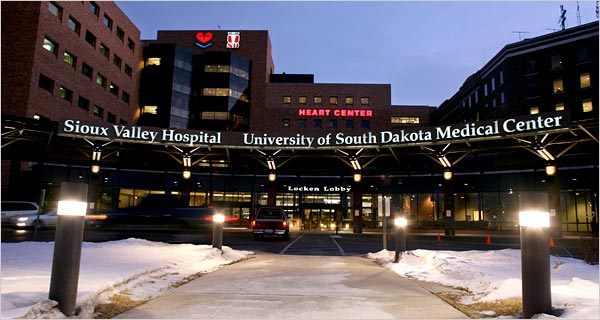

Syphilis rates are soaring in South Dakota's American Indian Communities. What's going on?
By Keren Landman

Photo taken from Vos.com
Photo taken from Vos.com
Over the last five years, syphilis transmission has increased explosively all over the US. The spread of this infection, which starts as a rash but can progress to severe disease in adults, is particularly alarming because syphilis infections during pregnancy can lead to death or disability in newborns.
Although syphilis trends are bad on a national scale, South Dakota’s numbers are particularly concerning. Since 2020, cases in the state have increased tenfold. Furthermore, infections are not evenly spread across the population: American Indians make up more than two-thirds of the state’s cases.
Although centuries of racist social and economic policies underpin many of the health inequities that affect American Indians, the exact risk factors at play in this particular outbreak are unclear. As in many states, American Indians in South Dakota are likelier to face barriers to accessing health care than other residents. On a national scale, those barriers are associated with increased risk for syphilis and a host of other preventable health conditions.
There are still more questions than answers about South Dakota’s syphilis outbreak. However, searching for the root of the problem reveals the frustrations of tribal public health authorities whose ability to help has been stymied by inadequate access to data about their own communities. It also yields at least one example that hints at what could be done to help.
It’s hard to get a clear picture of the syphilis cases in South Dakota, but all information sources point to a huge increase.
Different sources cite different figures about the number of cases in 2020. The state’s health department declined an interview request from Vox and did not respond to our emailed questions. However, documents on the state’s website indicate that between 2020 and 2022, cases jumped about sevenfold, to 874.
Nationally, syphilis case numbers among men are higher than among women (although the disease is spreading fastest overall in women). But that’s another place where South Dakota bucks national trends: Transmission has risen so quickly among women that even the case numbers are higher among women than men in the state.
The national trend reflects the fact that, for years, syphilis has been primarily transmitted among sexual networks of men who have sex with men. In contrast, the high number of cases among women in South Dakota suggests that rather than representing spillover into women from occasional sex between women and bisexual men, syphilis is likely spreading through heterosexual sex in South Dakota.
Earlier this fall, the CDC reported that syphilis cases were rising fastest among American Indians and Alaska Natives out of any racial or ethnic group in the US. About 52 out of every 100,000 people nationwide were developing new syphilis infections in 2021. The same year in South Dakota, five counties had rates more than six times higher than that national figure, and one of their rates was more than 12 times higher.
So far this year, the upward trend has continued: As of November 8, the state had seen 1,180 syphilis cases. Sixty-six percent of the cases have been among American Indians, even though residents of these communities only make up 9 percent of the state’s population.
Although adult syphilis infections can lead to severe disease, they’re usually treatable with a fairly simple regimen of penicillin injections — and the window to treat the disease in adults is years long.
That’s not the case when it comes to preventing infections in babies born to adults with syphilis, known as congenital syphilis, which is also on the rise. The number of babies born with syphilis rose precipitously in 2021: 16 babies were born with syphilis infections in South Dakota that year — as many as the total number born with syphilis in the state over the entire prior decade.
These babies get the disease while in the womb — which means that “if you’re pregnant, there’s a clock,” said Meghan Curry O’Connell, a citizen of the Cherokee Nation and chief public health officer for the Great Plains Tribal Leaders’ Health Board, which provides public health support and services for the 18 tribal communities spread across North and South Dakota, Nebraska, and Iowa. “We have to get to you and get you treated at least 30 days before you deliver,” she said.
Across the state, over the last few years, the clock has been winning. The consequences of congenital syphilis are dire: At minimum, infants born with syphilis infection require intensive care after birth, said O’Connell, “and at the very worst, that’s a dead baby.” At best, a significant proportion of babies born with syphilis are left with long-term health effects from a “completely preventable STD that we figured out how to cure in the 1940s,” she said.

Picture taken from parents.com
It’s unclear what’s driving the trend, but Danette Serr has some ideas.
Serr directs field health for South Dakota’s Cheyenne River Sioux Tribe, of which she’s also a member. She says most of the cases she’s seen have been among younger members of the tribe, who she says missed out on some sexual health education when schools shut down during the pandemic. She also thinks high rates of poverty, drug use, and boredom contribute to the spread of a range of infections. “If you’re not an outdoorsy person, and come wintertime, there’s not a lot to do. So you’re stuck inside,” she said, which can lead to more spread of communicable diseases.
"And At The Very Worst, That's A Dead Baby." - Meghan O'Connell
Across the state, similar explanations may underpin the continued rise in syphilis cases. In July, the Lakota Times reported that according to a South Dakota health department official, risk for syphilis infection among the state’s heterosexual women increased with a range of factors that would be familiar to any sexually transmitted infections (STI) researcher: women who had unprotected, intoxicated, or transactional sex, and those who had anonymous partners, were more likely to get infected.
Geographic distance from health care facilities also plays an important role in syphilis transmission throughout the state, said O’Connell. Residents of the Plains states — which include South Dakota — have to travel farther than other Americans to reach a hospital, and one out of five American Indians in the state doesn’t have access to a vehicle.
This factor may be particularly important in explaining the rise of congenital syphilis in the state’s newborns.
Expectant parents who live far from health care are at risk of missing the prenatal care that could prevent syphilis in pregnancy. They’re also at risk of missing out on the labor and delivery services and the specialty neonatal care that would maximize a newborn’s likelihood of surviving and thriving if they were born with syphilis. South Dakota, along with many other Plains states, has large swaths of land that the March of Dimes considers maternity care deserts — meaning that they lack hospitals and staff that provide obstetric care.
In that sense, the abrupt rise of congenital syphilis is a red flag signaling major gaps in maternal health care access. Distance is an important part of that gap, but among people with addiction disorders or psychiatric disease, and for some living in poverty, fear of arrest or bad treatment by a provider — or of incurring large medical bills — may be additional barriers to care. American Indians suffer from these conditions more often than other Americans, due in large part to generations of systematic deprivation and trauma. (South Dakota voters’ recent decision to expand Medicaid in the state may at least reduce financial fears for some of the 14,000 American Indians who will benefit from the plan.)
The pandemic also contributed to the rise in syphilis cases, says O’Connell. When hospitals and clinics were overwhelmed with patients, people with STI symptoms avoided them for fear of getting infected. And with so many public health resources redirected toward Covid-19 for so long, many screening programs were deprioritized and temporarily shut down.
Stigma related to STIs is a perennial challenge to stopping STI transmission. Culturally sensitive sex education that accounts for different norms between tribes can help mitigate the shame or fear that sometimes interferes with having safe sex or seeking sexual health care. But it’s a touchy subject on the Cheyenne River reservation, said Serr, and schools are often afraid to provide it for fear of parents’ backlash.
Picture taken from The New York Times.
While it’s not clear what’s driving the increase in cases, there are clear ways to deal with it — namely, widespread testing and community outreach.
Serr is involved in this work. She leads a team of health care workers — also mostly Cheyenne River Sioux — who provide a range of services in largely rural and remote parts of the reservation, including sexual health care.
Prompted by an uptick in HIV reported in the local hospital run by the Indian Health Service (IHS) — with whom Serr’s team shares an electronic health records system — her field health staff recently ramped up a mass STI testing campaign across the 1.5 million-plus-acre Cheyenne River Reservation, offering gift cards, food, and other incentives to draw residents in for events at community centers and other gathering places. When they looked for syphilis cases, they found them in high numbers. They offered treatment to those infected, as well as broader education on preventing STIs.
Now, said Serr, they’re starting to see cases level out, although “we’re still testing like crazy,” she said.
Her team’s roots in the community it serves are a major asset. “The communities know us and that helps — the rapport makes a big difference,” said Serr. Additionally, by routinely traveling large distances to provide care, her team not only overcomes the obstacles geography poses to health care access, but also forms relationships that make them a trusted presence everywhere on the reservation.
“We can pretty much go to every community and know who we’re speaking with and talking to and helping,” said Serr.
Serr’s community-based approach could be replicated elsewhere.
But there’s a big obstacle preventing that from happening, said O’Connell: Although she leads what’s effectively a health department, she has limited access to the state’s detailed and confidential data on cases within those tribes — no visibility on which specific people are infected and where exactly they live.
Her agency has rights to this data: Federal law authorizes tribal epidemiology centers to access data from federal entities like IHS and CDC. But those agencies simply aren’t sharing it, either with her agency or with tribes themselves, said O’Connell. (The IHS did not respond to Vox’s request for comment.)
Because her team shares IHS’s electronic medical records database, Serr could figure out which communities were worst affected. But O’Connell, whose work covers a wider area, could not.
This means that, unlike Serr, she doesn’t know which people in which specific communities are most affected — information that would help her guide tribes’ decisions on, for example, where to target more proactive pregnancy screening programs aimed at reducing cases in newborns.
South Dakota isn’t alone on this. According to a March report by the US Government Accountability Office, tribal authorities have wildly varying levels of access to information, and about two-thirds of them experience major delays in getting public health data from state agencies. The report attributed the holdups to administrative deficiencies in several areas, including the lack of HHS policies affirming tribal data access, and the absence of guidance for tribes on how to request data — and for agencies on how to respond to those requests. (This problem also isn’t unique to syphilis: Data-sharing problems caused enough challenges during the Covid-19 pandemic to provoke federal legislative hearings and new bills aimed at improving tribes’ access to their own data.)
It’s important for tribes to have this data. Data is critical for guiding ground-level public health work like what Serr’s team does, and those types of efforts are generally more effective when they’re done by the tribes themselves. State and federal entities might or might not have good relationships in tribal communities, said O’Connell. But tribal governments employ workers who know the community and have a better shot at finding and treating folks who are difficult to find, she said, and that’s particularly important when it comes to chronic or stigmatizing diseases.
Although treating people for syphilis and investigating outbreaks are both things the state health department should be able to do, excluding the tribal health board means important resources are going unused in the fight to stop syphilis from causing more disability and death among the state’s newborns.
At this moment in particular, said O’Connell, people in her line of work are facing too much need with too few resources. “Public health always needs more hands on deck,” she said. “By working together, we’ll have better outcomes.”